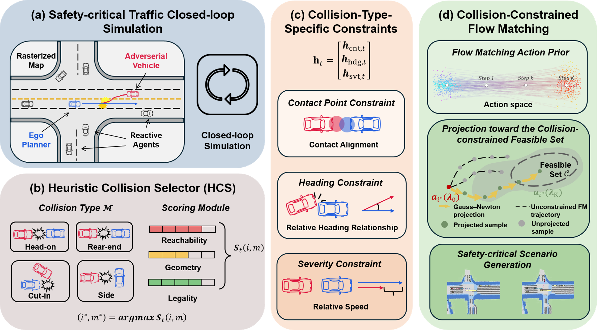
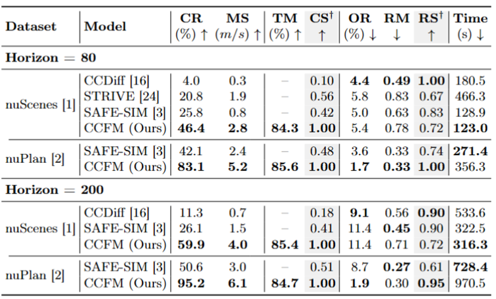
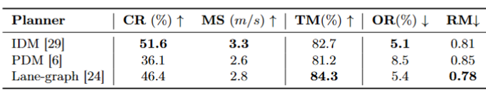

Cut-in
Head-on
Rear-end
Side
Abstract
Evaluation of autonomous vehicle (AV) planners in safety-critical closed-loop simulation is essential for real-world deployment. However, generating controllable safety-critical scenarios remains challenging. Existing approaches use soft guidance that provides only probabilistic preferences and cannot guarantee the satisfaction of geometric and severity constraints associated with specific collision types. We introduce Collision-Constrained Flow Matching (CCFM), a novel framework that guarantees precise collision control through hard physical constraints. CCFM consists of three key components: (i) a heuristic collision selector that optimally identifies an adversarial agent and collision type via composite scoring; (ii) structured hard constraints that explicitly define four collision types (rear-end, side, cut-in, head-on) through contact point, heading, and severity requirements; and (iii) a collision-constrained flow matching sampler that enforces the constraints via Gauss-Newton manifold projection. CCFM achieves collision rate up to 46.4% on nuScenes and 83.1% on nuPlan, significantly outperforming baselines while preserving realistic driving behavior. By enabling controllable collision characteristics in safety-critical scenario generation, CCFM provides a reliable foundation for AV safety evaluation and sim-to-real crash data generation. The code and implementation details are available at https://github.com/KELISBU/CCFM.
Closed-Loop Simulation Results


BibTeX
@inproceedings{10.1007/978-3-032-37490-5_5,
author = {Li, Ke and Liang, Kaidi and Ding, Yuxin and
Biswas, Debojyoti and Hu, Xianbiao and Qin, Ruwen},
title = {{CCFM}: Collision-Constrained Flow Matching for Safety-Critical Scenario Generation},
booktitle = {Computer Vision -- ECCV 2026},
year = {2026},
publisher = {Springer Nature Switzerland},
address = {Cham},
pages = {86--103},
isbn = {978-3-032-37490-5},
doi = {10.1007/978-3-032-37490-5_5}
}